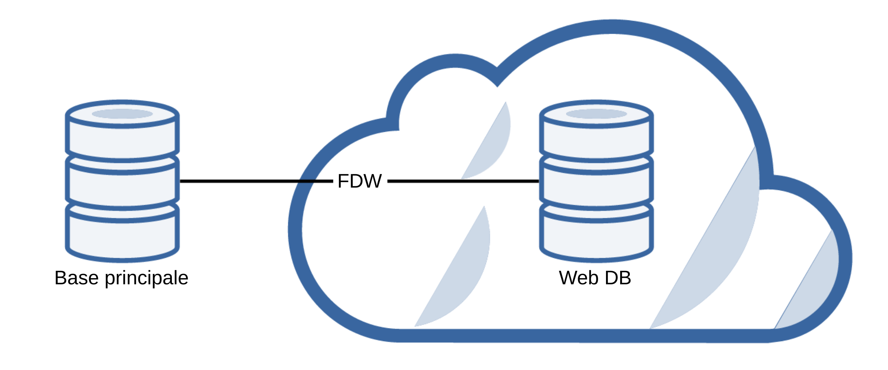
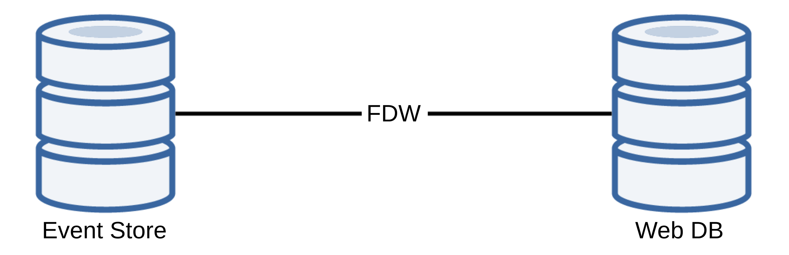
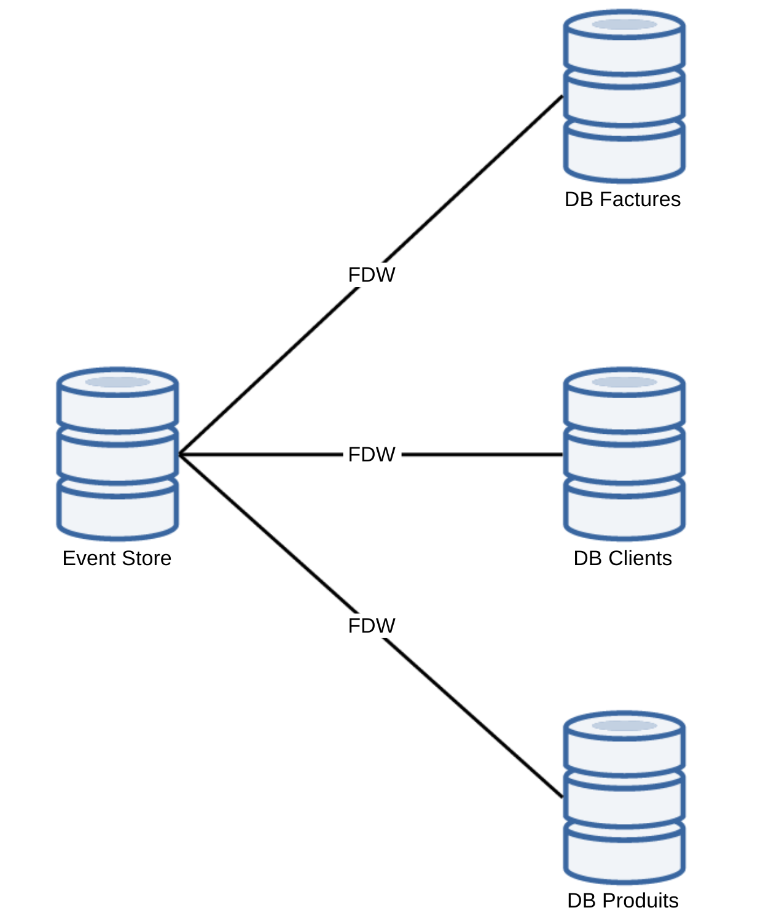
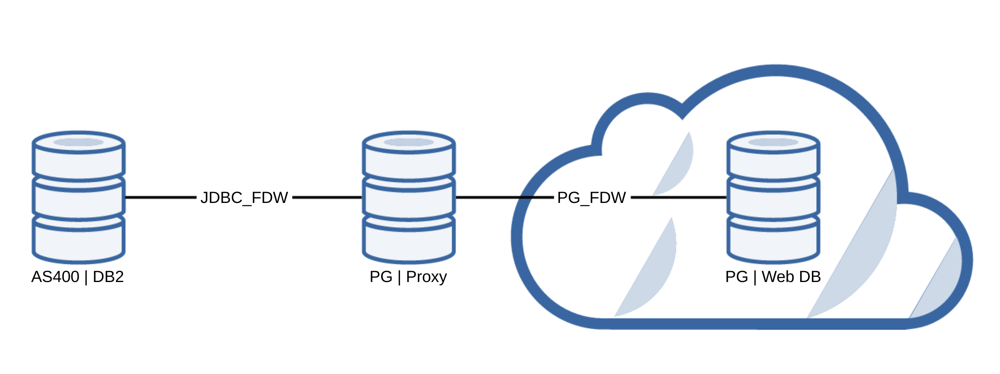

Foreign Data Wrapper
ou un réseau social pour vos données
sous PostgreSQL
Appuyez sur [s] pour ouvrir les notes présentateur dans une nouvelle fenêtre.
Qui suis-je ?


Merci
PostgreSQL
Historique
1974 : Création d'Ingres
1985 : Refonte de zéro d'Ingres pour créer postgres
1995 : Ajout des fonctionnalités SQL => Postgres 95
1996 : Renommage en PostgreSQL
2016 : Version 9.5
Fonctionnalités générales
- SGBDRO
- Accessible : JDBC, pgsql, ...
-
SQL Avancé :
- Triggers
- Common Table Expressions
- Vues et Vues matérialisées
- ...
- PostGIS
- ...
- Foreign Data Wrapper
Foreign Data Wrapper
Qu'est-ce que c'est ?
Norme SQL/MED (Management of External Data)
Créée en 2003
Création de wrapper :
- Nativement en C
- En python avec "Multicorn"
- En ruby avec "Holycorn"
Quelques Wrappers
PostgreSQL
SGBD SQL courants : MySQL, Oracle, SQL Server, SQLite, ...
Connecteurs SQL génériques : ODBC, JDBC
NoSQL : MongoDB, Cassandra, Redis, ...
CSV, XML, LDAP
Git, Logs, WWW, IMAP
Processus, Twitter, Docker, ...
Évolution (1/2)
07/2009 : v8.4 => Démarrage de l'implémentation du SQL/MED
09/2011 : v9.1 => Arrivée des "Foreign Tables"
09/2013 : v9.3
Ajout de l'écriture sur les Foreign Tables
Ajout du type json
10/2014 : v9.4
Ajout des triggers sur les Foreign Tables
Ajout du type jsonb
Évolution (2/2)
01/2016 : v9.5
IMPORT FOREIGN SCHEMA
INSERT ... ON CONFLICT DO NOTHING/UPDATE
T3/2016 : v9.6
JOIN et SORT directement sur le serveur distant
UPDATE et DELETE avec une meilleure gestion des transactions
Possibilité d'annuler une requête distante
Cas d'utilisation
Décentralisation
CQRS/ES
CQRS/ES Multiple
Comment ça marche ?
Déclaration de la connexion
CREATE EXTENSION postgres_fdw;
Création de la connexion
CREATE SERVER nom_remote
FOREIGN DATA WRAPPER postgres_fdw
OPTIONS (
host 'remote.url.lan',
dbname 'ma_db'
);
Mapping utilisateur
CREATE USER MAPPING FOR mon_local_user
SERVER mon_remote
OPTIONS (
user 'mon_remote_user',
password 'mon_remote_passwd'
);
Création d'une table distante
CREATE FOREIGN TABLE table_locale_mais_distante (
id INTEGER,
col1 VARCHAR(32),
col2 BOOLEAN
)
SERVER mon_remote
OPTIONS (
table_name 'le_nom_de_ma_table',
updatable 'false'
);
Utilisation
SELECT id, col1
FROM table_locale_mais_distante
WHERE col2 IS TRUE
ORDER BY col1;
Encore plus facile
IMPORT FOREIGN SCHEMA schema_distant
FROM SERVER mon_remote
INTO mon_schema_local;
Exemple
| Server = "Base principale" | Client = "Web DB" |
Tables sur server
server=# \d
Liste des relations
Schéma | Nom | Type | Propriétaire
--------+-----------------+----------+--------------
public | country | table | user
public | country_id_seq | séquence | user
public | customer | table | user
public | customer_id_seq | séquence | user
(4 lignes)
Table sur le server
server=# \d country
Table « public.country »
Colonne | Type | Modificateurs
---------+-----------------------+---------------
id | integer | non NULL
alpha2 | character(2) | non NULL
alpha3 | character(3) | non NULL
label | character varying(64) | non NULL
Index :
"country_pkey" PRIMARY KEY, btree (id)
Table sur le server
server=# SELECT count(id) FROM country;
count
-------
241
(1 ligne)
server=# SELECT id, alpha2, alpha3, label
FROM public.country
WHERE alpha2 = 'FR';
id | alpha2 | alpha3 | label
----+--------+--------+--------
75 | FR | FRA | France
(1 ligne)
Tables sur le client
client=# \d
Liste des relations
Schéma | Nom | Type | Propriétaire
--------+------------+------------------+--------------
public | f_country | table distante | user
public | f_customer | table distante | user
public | m_customer | vue matérialisée | user
public | u_country | table distante | user
(4 lignes)
Table sur le client
client=# \d f_country
Table distante « public.f_country »
Colonne | Type | Modificateurs | Options FDW
---------+-----------------------+---------------+-------------
id | integer | |
alpha2 | character(2) | |
alpha3 | character(3) | |
label | character varying(64) | |
Server: server
FDW Options: (
schema_name 'public',
table_name 'country',
updatable 'false')
Table sur le client
client=# SELECT count(id) FROM f_country;
count
-------
241
(1 ligne)
client=# SELECT id, alpha2, alpha3, label
FROM public.f_country
WHERE alpha2 = 'FR';
id | alpha2 | alpha3 | label
----+--------+--------+--------
75 | FR | FRA | France
(1 ligne)
Vue matérialisée
Mélange entre une vue et une table
CREATE MATERIALIZED VIEW m_customer AS
SELECT id, lastname, firstname,
date_part('year', age(birthday)) as age
FROM f_customer
WITH NO DATA;
CREATE INDEX m_customer_keys
ON m_customer (id);
REFRESH MATERIALIZED VIEW m_customer;
server=# SELECT id, lastname, firstname, birthday
FROM customer LIMIT 2;
id | lastname | firstname | birthday
----+----------+-----------+------------
1 | Potter | Harry | 1980-08-31
2 | Weasley | Ron | 1980-03-01
(2 lignes)
client=# SELECT id, lastname, firstname, age
FROM m_customer LIMIT 2;
id | lastname | firstname | age
----+----------+-----------+-----
1 | Potter | Harry | 35
2 | Weasley | Ron | 36
(2 lignes)
Cas pratique
Besoin
Application Web
IBM AS400/DB2
Driver PHP
JDBC
jdbc2_fdw
Explication
Rafraichissement du proxy
CREATE FOREIGN TABLE f_ma_table (...) SERVER server OPTIONS (...);
CREATE MATERIALIZED VIEW m_ma_table AS
SELECT ... FROM f_ma_table;
CREATE FUNCTION refresh_view(name) RETURNS INTEGER AS $$
BEGIN
EXECUTE format('REFRESH MATERIALIZED VIEW %s', name);
RETURN 1;
END;
$$ LANGUAGE 'plpgsql';
CREATE VIEW refresh_ma_table AS SELECT refresh_view('m_ma_table');
Rafraichissement côté web
Deux vues matérialisées
La première liée au "proxy"
La seconde liée à la première
Complément (1/2)
Table de commande trop volumineuse
Durée de rafraichissement > 20 minutes
Besoin d'avoir des données de moins de 10 minutes
Complément (2/2)
- Découpage en 2 vues (proxy) :
- toutes les lignes
- les "dernières" commandes
- Récupération (web) :
- historique : une fois par jour
- "light" : toutes les 10 minutes
Fusion dans une 3ème vue